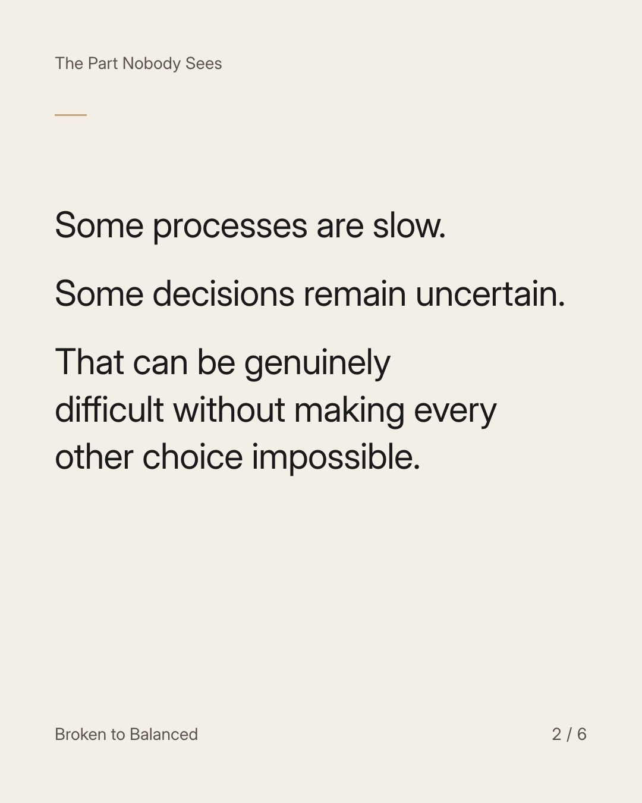
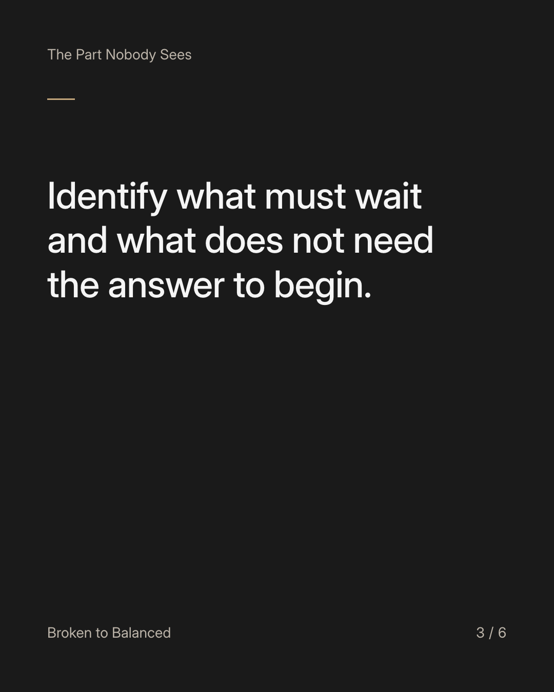
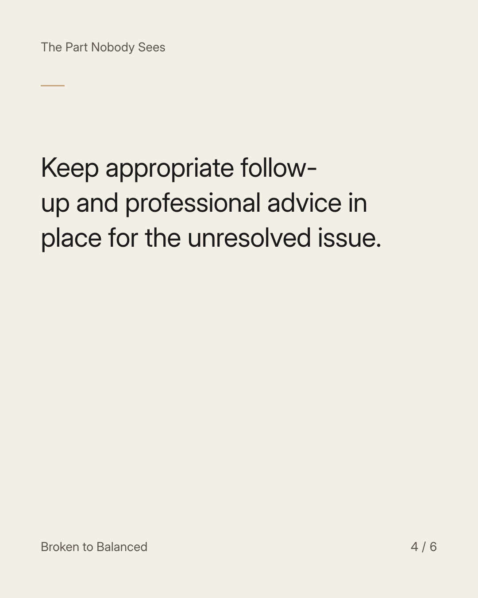
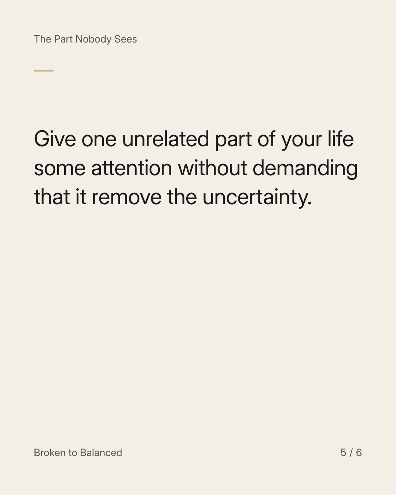
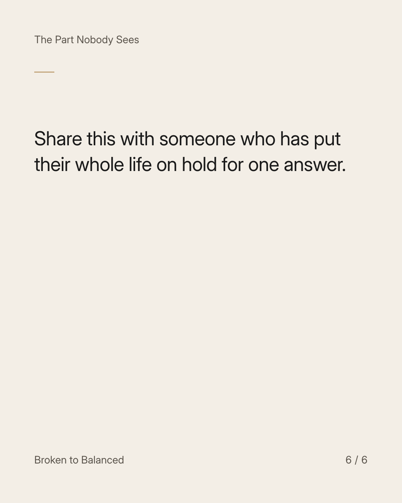

Exact text and accessibility text
Your life can grow while an important question is still unresolved.
Slide 1 of 6. Your life can grow while an important question is still unresolved.


Exact text and accessibility text
Some processes are slow. Some decisions remain uncertain. That can be genuinely difficult without making every other choice impossible.
Slide 2 of 6. Some processes are slow. Some decisions remain uncertain. That can be genuinely difficult without making every other choice impossible.


Exact text and accessibility text
Identify what must wait and what does not need the answer to begin.
Slide 3 of 6. Identify what must wait and what does not need the answer to begin.


Exact text and accessibility text
Keep appropriate follow-up and professional advice in place for the unresolved issue.
Slide 4 of 6. Keep appropriate follow-up and professional advice in place for the unresolved issue.


Exact text and accessibility text
Give one unrelated part of your life some attention without demanding that it remove the uncertainty.
Slide 5 of 6. Give one unrelated part of your life some attention without demanding that it remove the uncertainty.


Exact text and accessibility text
Share this with someone who has put their whole life on hold for one answer.
Slide 6 of 6. Share this with someone who has put their whole life on hold for one answer.
Exact caption
Plain-text fallback: select and copy the caption.